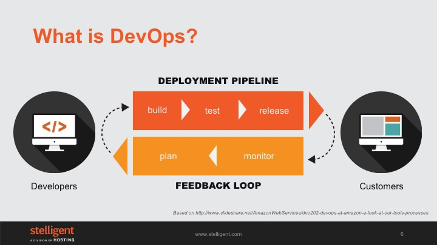

            <div class="main-body-div" id="main-box">
            <div class="container-fluid">
                <div class="row">
                    <div class="col-lg-12 col-xs-12">
                <!-- Main Body Content -->
                    <h2 class="page-title bg-primary">DevOps: What is?</h2>
                   <!-- inner body -->
                <div class="inner-body panel">
                    <div class="col-xs-12 col-md-12">
                        <div class="text-center">
                            
                        </div>
                    </div>
                    <p>DevOps is a portmanteau of the words representing "Development" and "Operations" teams, but it’s really more about representing the entire value stream. What you see in the illustration is similar to what AWS shares in some of its DevOps talks - by relating DevOps to something you’re likely familiar with: the software development lifecycle. This might be for a web application or service and on the one side you have customers and the other, developers. A developer comes up with an idea for a new feature, implements it and then puts it through a process of building, testing, and going through a release process until it gets delivered to production where your customers actually start using it. It’s only once it gets into the hands of your customers do you start to learn from it. You can get usage data,  get direct feedback from customers, or start to make informed decisions on what to work on next. Based on this, you might decide to update or improve the feature, or even develop a new feature. And, this is where this feedback loop starts again.</p>
                    <p>There are two key points to consider:</p>
                        <ul class="edited-ul">
                            <li>The faster you’re able to get through this loop determines how responsive you can be to customers and how innovative you are</li>
                            <li>From your customer’s perspective, you’re only delivering value when you’re spending time on developing new features</li>
                        </ul>
                    <p>Therefore, you want to maximize the time you’re spending on the developing new features and minimize the time you’re spending on the process for building, testing, and releasing software systems. So it’s really these two things that makeup DevOps. As a result, any efficiency you can drive into the middle to increase these feedback loops is DevOps. And, this is why it’s often confusing to people, because this could be changes to the culture, organization, process, or tooling changes and that’s expected. Improving anything in this feedback loop is what DevOps is all about.</p>
                 </div>  


